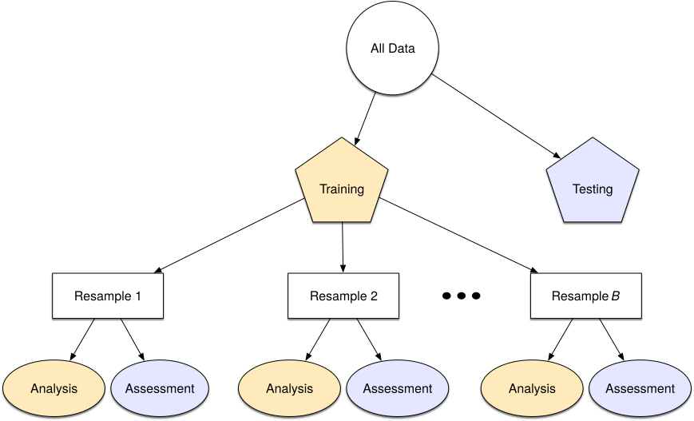

MATH 427: Cross Validation and Resampling
Announcement
On March 5th at 10am in JAAC, Kyle Mayer will be guest lecturing to talk about his role as a data analyst at Micron. Kyle has a Bachelors in Engineering and a Masters in Physics.
Location: Basement of the library.
Computational Set-Up
Resampling & Cross Validation
Data Splitting: Discussion
- Why do we split our data before fitting a model?
- To prevent overfitting
- What are some pitfalls we might encounter if we compare A LOT of models on the test set? (E.g. 100 different thresholds or \(k = 1, 2, \ldots, 100\) neighbors)
- We open ourselves up to information leakage
- Potential solution… three way split (training/validation/test)
- Better solution… cross validation and resampling
Resampling

Figure 10.1 from TMWR
Cross-Validation Terminology
- Divide training set into two sets
- Analysis set: fit the model (similar to training set)
- Assessment set: evaluation the model (similar to test set)
K-Fold Cross-Validation (CV)
- Partition your data into \(K\) randomly selected non-overlapping “folds”
- Folds don’t overlap and every training observation is in one fold
- Each fold contained \(1/K\) of the training data
- Looping through the folds \(k = 1, \ldots, K\):
- Treat fold \(k\) as the assessment set
- Treat all folds except for \(k\) as the analysis set
- Fit model to analysis set (use whole modeling workflow)
- Compute error metrics on assessment set
- After loop, you will have \(K\) copies of each error metrics
- Average them together to get performance estimate
- Can also look at distribution of performance metrics
Your Turn!!!
Suppose you start with a data set with \(n=1000\) observations. You are trying to predict a numerical variable and your target metric is MSE.
You start with an initial 70/30 training/test split. How many observations are in your training and test set?
You then perform 10-Fold CV on the training set. How large is each analysis set and each assessment set and how many analysis and assessment sets do you have?
Do you analysis set’s overlap? Do your assessment sets overlap?
How many times will you fit your model? How many different MSE’s will you have?
CV Workflow in R
Data: Ames Housing Prices
A data set from De Cock (2011) has 82 fields were recorded for 2,930 properties in Ames IA. This version is copies from the AmesHousing package but does not include a few quality columns that appear to be outcomes rather than predictors.
Goal: Predict Sale_Price.
Rows: 2,930
Columns: 74
$ MS_SubClass <fct> One_Story_1946_and_Newer_All_Styles, One_Story_1946…
$ MS_Zoning <fct> Residential_Low_Density, Residential_High_Density, …
$ Lot_Frontage <dbl> 141, 80, 81, 93, 74, 78, 41, 43, 39, 60, 75, 0, 63,…
$ Lot_Area <int> 31770, 11622, 14267, 11160, 13830, 9978, 4920, 5005…
$ Street <fct> Pave, Pave, Pave, Pave, Pave, Pave, Pave, Pave, Pav…
$ Alley <fct> No_Alley_Access, No_Alley_Access, No_Alley_Access, …
$ Lot_Shape <fct> Slightly_Irregular, Regular, Slightly_Irregular, Re…
$ Land_Contour <fct> Lvl, Lvl, Lvl, Lvl, Lvl, Lvl, Lvl, HLS, Lvl, Lvl, L…
$ Utilities <fct> AllPub, AllPub, AllPub, AllPub, AllPub, AllPub, All…
$ Lot_Config <fct> Corner, Inside, Corner, Corner, Inside, Inside, Ins…
$ Land_Slope <fct> Gtl, Gtl, Gtl, Gtl, Gtl, Gtl, Gtl, Gtl, Gtl, Gtl, G…
$ Neighborhood <fct> North_Ames, North_Ames, North_Ames, North_Ames, Gil…
$ Condition_1 <fct> Norm, Feedr, Norm, Norm, Norm, Norm, Norm, Norm, No…
$ Condition_2 <fct> Norm, Norm, Norm, Norm, Norm, Norm, Norm, Norm, Nor…
$ Bldg_Type <fct> OneFam, OneFam, OneFam, OneFam, OneFam, OneFam, Twn…
$ House_Style <fct> One_Story, One_Story, One_Story, One_Story, Two_Sto…
$ Overall_Cond <fct> Average, Above_Average, Above_Average, Average, Ave…
$ Year_Built <int> 1960, 1961, 1958, 1968, 1997, 1998, 2001, 1992, 199…
$ Year_Remod_Add <int> 1960, 1961, 1958, 1968, 1998, 1998, 2001, 1992, 199…
$ Roof_Style <fct> Hip, Gable, Hip, Hip, Gable, Gable, Gable, Gable, G…
$ Roof_Matl <fct> CompShg, CompShg, CompShg, CompShg, CompShg, CompSh…
$ Exterior_1st <fct> BrkFace, VinylSd, Wd Sdng, BrkFace, VinylSd, VinylS…
$ Exterior_2nd <fct> Plywood, VinylSd, Wd Sdng, BrkFace, VinylSd, VinylS…
$ Mas_Vnr_Type <fct> Stone, None, BrkFace, None, None, BrkFace, None, No…
$ Mas_Vnr_Area <dbl> 112, 0, 108, 0, 0, 20, 0, 0, 0, 0, 0, 0, 0, 0, 0, 6…
$ Exter_Cond <fct> Typical, Typical, Typical, Typical, Typical, Typica…
$ Foundation <fct> CBlock, CBlock, CBlock, CBlock, PConc, PConc, PConc…
$ Bsmt_Cond <fct> Good, Typical, Typical, Typical, Typical, Typical, …
$ Bsmt_Exposure <fct> Gd, No, No, No, No, No, Mn, No, No, No, No, No, No,…
$ BsmtFin_Type_1 <fct> BLQ, Rec, ALQ, ALQ, GLQ, GLQ, GLQ, ALQ, GLQ, Unf, U…
$ BsmtFin_SF_1 <dbl> 2, 6, 1, 1, 3, 3, 3, 1, 3, 7, 7, 1, 7, 3, 3, 1, 3, …
$ BsmtFin_Type_2 <fct> Unf, LwQ, Unf, Unf, Unf, Unf, Unf, Unf, Unf, Unf, U…
$ BsmtFin_SF_2 <dbl> 0, 144, 0, 0, 0, 0, 0, 0, 0, 0, 0, 0, 0, 0, 1120, 0…
$ Bsmt_Unf_SF <dbl> 441, 270, 406, 1045, 137, 324, 722, 1017, 415, 994,…
$ Total_Bsmt_SF <dbl> 1080, 882, 1329, 2110, 928, 926, 1338, 1280, 1595, …
$ Heating <fct> GasA, GasA, GasA, GasA, GasA, GasA, GasA, GasA, Gas…
$ Heating_QC <fct> Fair, Typical, Typical, Excellent, Good, Excellent,…
$ Central_Air <fct> Y, Y, Y, Y, Y, Y, Y, Y, Y, Y, Y, Y, Y, Y, Y, Y, Y, …
$ Electrical <fct> SBrkr, SBrkr, SBrkr, SBrkr, SBrkr, SBrkr, SBrkr, SB…
$ First_Flr_SF <int> 1656, 896, 1329, 2110, 928, 926, 1338, 1280, 1616, …
$ Second_Flr_SF <int> 0, 0, 0, 0, 701, 678, 0, 0, 0, 776, 892, 0, 676, 0,…
$ Gr_Liv_Area <int> 1656, 896, 1329, 2110, 1629, 1604, 1338, 1280, 1616…
$ Bsmt_Full_Bath <dbl> 1, 0, 0, 1, 0, 0, 1, 0, 1, 0, 0, 1, 0, 1, 1, 1, 0, …
$ Bsmt_Half_Bath <dbl> 0, 0, 0, 0, 0, 0, 0, 0, 0, 0, 0, 0, 0, 0, 0, 0, 0, …
$ Full_Bath <int> 1, 1, 1, 2, 2, 2, 2, 2, 2, 2, 2, 2, 2, 1, 1, 3, 2, …
$ Half_Bath <int> 0, 0, 1, 1, 1, 1, 0, 0, 0, 1, 1, 0, 1, 1, 1, 1, 0, …
$ Bedroom_AbvGr <int> 3, 2, 3, 3, 3, 3, 2, 2, 2, 3, 3, 3, 3, 2, 1, 4, 4, …
$ Kitchen_AbvGr <int> 1, 1, 1, 1, 1, 1, 1, 1, 1, 1, 1, 1, 1, 1, 1, 1, 1, …
$ TotRms_AbvGrd <int> 7, 5, 6, 8, 6, 7, 6, 5, 5, 7, 7, 6, 7, 5, 4, 12, 8,…
$ Functional <fct> Typ, Typ, Typ, Typ, Typ, Typ, Typ, Typ, Typ, Typ, T…
$ Fireplaces <int> 2, 0, 0, 2, 1, 1, 0, 0, 1, 1, 1, 0, 1, 1, 0, 1, 0, …
$ Garage_Type <fct> Attchd, Attchd, Attchd, Attchd, Attchd, Attchd, Att…
$ Garage_Finish <fct> Fin, Unf, Unf, Fin, Fin, Fin, Fin, RFn, RFn, Fin, F…
$ Garage_Cars <dbl> 2, 1, 1, 2, 2, 2, 2, 2, 2, 2, 2, 2, 2, 2, 2, 3, 2, …
$ Garage_Area <dbl> 528, 730, 312, 522, 482, 470, 582, 506, 608, 442, 4…
$ Garage_Cond <fct> Typical, Typical, Typical, Typical, Typical, Typica…
$ Paved_Drive <fct> Partial_Pavement, Paved, Paved, Paved, Paved, Paved…
$ Wood_Deck_SF <int> 210, 140, 393, 0, 212, 360, 0, 0, 237, 140, 157, 48…
$ Open_Porch_SF <int> 62, 0, 36, 0, 34, 36, 0, 82, 152, 60, 84, 21, 75, 0…
$ Enclosed_Porch <int> 0, 0, 0, 0, 0, 0, 170, 0, 0, 0, 0, 0, 0, 0, 0, 0, 0…
$ Three_season_porch <int> 0, 0, 0, 0, 0, 0, 0, 0, 0, 0, 0, 0, 0, 0, 0, 0, 0, …
$ Screen_Porch <int> 0, 120, 0, 0, 0, 0, 0, 144, 0, 0, 0, 0, 0, 0, 140, …
$ Pool_Area <int> 0, 0, 0, 0, 0, 0, 0, 0, 0, 0, 0, 0, 0, 0, 0, 0, 0, …
$ Pool_QC <fct> No_Pool, No_Pool, No_Pool, No_Pool, No_Pool, No_Poo…
$ Fence <fct> No_Fence, Minimum_Privacy, No_Fence, No_Fence, Mini…
$ Misc_Feature <fct> None, None, Gar2, None, None, None, None, None, Non…
$ Misc_Val <int> 0, 0, 12500, 0, 0, 0, 0, 0, 0, 0, 0, 500, 0, 0, 0, …
$ Mo_Sold <int> 5, 6, 6, 4, 3, 6, 4, 1, 3, 6, 4, 3, 5, 2, 6, 6, 6, …
$ Year_Sold <int> 2010, 2010, 2010, 2010, 2010, 2010, 2010, 2010, 201…
$ Sale_Type <fct> WD , WD , WD , WD , WD , WD , WD , WD , WD , WD , W…
$ Sale_Condition <fct> Normal, Normal, Normal, Normal, Normal, Normal, Nor…
$ Sale_Price <int> 215000, 105000, 172000, 244000, 189900, 195500, 213…
$ Longitude <dbl> -93.61975, -93.61976, -93.61939, -93.61732, -93.638…
$ Latitude <dbl> 42.05403, 42.05301, 42.05266, 42.05125, 42.06090, 4…Initial Data Split
Define Folds
# 10-fold cross-validation
# A tibble: 10 × 2
splits id
<list> <chr>
1 <split [1977/220]> Fold01
2 <split [1977/220]> Fold02
3 <split [1977/220]> Fold03
4 <split [1977/220]> Fold04
5 <split [1977/220]> Fold05
6 <split [1977/220]> Fold06
7 <split [1977/220]> Fold07
8 <split [1978/219]> Fold08
9 <split [1978/219]> Fold09
10 <split [1978/219]> Fold10Define Model(s)
Define Preprocessing: Linear regression
lm_preproc <- recipe(Sale_Price ~ ., data = ames_train) |>
step_dummy(all_nominal_predictors()) |> # Convert categorical data into dummy variables
step_zv(all_predictors()) |> # remove zero-variance predictors (i.e. predictors with one value)
step_corr(all_predictors(), threshold = 0.5) |> # remove highly correlated predictors
step_lincomb(all_predictors()) # remove variables that have exact linear combinationsDefine Preprocessing: KNN
knn_preproc <- recipe(Sale_Price ~ ., data = ames_train) |> # only uses ames_train for data types
step_dummy(all_nominal_predictors(), one_hot = TRUE) |> # Convert categorical data into dummy variables
step_zv(all_predictors()) |> # remove zero-variance predictors (i.e. predictors with one value)
step_normalize(all_predictors())Define Workflows
Define Metrics
Fit and Assess Models
What does this create
# Resampling results
# 10-fold cross-validation
# A tibble: 10 × 4
splits id .metrics .notes
<list> <chr> <list> <list>
1 <split [1977/220]> Fold01 <tibble [2 × 4]> <tibble [0 × 3]>
2 <split [1977/220]> Fold02 <tibble [2 × 4]> <tibble [0 × 3]>
3 <split [1977/220]> Fold03 <tibble [2 × 4]> <tibble [0 × 3]>
4 <split [1977/220]> Fold04 <tibble [2 × 4]> <tibble [0 × 3]>
5 <split [1977/220]> Fold05 <tibble [2 × 4]> <tibble [0 × 3]>
6 <split [1977/220]> Fold06 <tibble [2 × 4]> <tibble [0 × 3]>
7 <split [1977/220]> Fold07 <tibble [2 × 4]> <tibble [0 × 3]>
8 <split [1978/219]> Fold08 <tibble [2 × 4]> <tibble [0 × 3]>
9 <split [1978/219]> Fold09 <tibble [2 × 4]> <tibble [0 × 3]>
10 <split [1978/219]> Fold10 <tibble [2 × 4]> <tibble [0 × 3]>Collecting Metrics
| .metric | .estimator | mean | n | std_err | .config |
|---|---|---|---|---|---|
| rmse | standard | 3.214504e+04 | 10 | 1501.9928830 | Preprocessor1_Model1 |
| rsq | standard | 8.413166e-01 | 10 | 0.0070533 | Preprocessor1_Model1 |
| .metric | .estimator | mean | n | std_err | .config |
|---|---|---|---|---|---|
| rmse | standard | 39821.01836 | 10 | 2031.0935396 | Preprocessor1_Model1 |
| rsq | standard | 0.75573 | 10 | 0.0200233 | Preprocessor1_Model1 |
| .metric | .estimator | mean | n | std_err | .config |
|---|---|---|---|---|---|
| rmse | standard | 3.809082e+04 | 10 | 1842.876508 | Preprocessor1_Model1 |
| rsq | standard | 7.814575e-01 | 10 | 0.014159 | Preprocessor1_Model1 |
Questions
- How many times did we train a model?
- Which model formulation was the best?
Final Model
- After choosing best model/workflow, fit on full training set and assess on test set
Leave-One-Out Cross-Validation (LOOCV)
- \(n\)-Fold cross validation
- Iterate through training set
- Treat observation \(i\) has assessment set
- Treat other \(n-1\) observations as analysis set
Suppose you implement LOOCV on a dataset with \(n=100\) observations.
What is the size (number of observations) of each analysis set?
What is the size of each assessment set?
How many times must you fit a model to complete the overall LOOCV process?
LOOCV vs. K-Fold CV
- Typically we use 5-Fold or 10-Fold CV
- \(K\)-Fold is much less computationally expensive
- \(K\) actually gives better estimates of your test error… Why?
- Bias-Variance Trade-Off
- LOOCV has the lowest level of bias but highest level of variance
- 5- and 10-Fold CV have medium levels of bias but lower variance